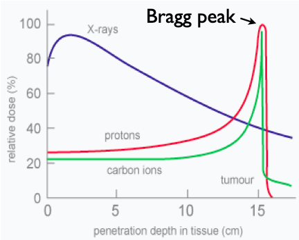

Proton Computed Tomography
Motivation
Cancer is the second leading cause of death in the Western world. While surgery and chemotherapy can cure patients, these treatments are sometimes augmented with radiation therapy.
Compared to x-ray radiation (the most popular radiation therapy), proton radiation leaves the subject with less residual radiation poisoning. This is due to the Bragg peak: the proton's stopping position which has the peak radiation dose stopping position. That no radiation is delivered past the Brag peak is the feature that makes proton radiation a desirable tool in planning treatments of head and neck tumors which are often surrounded by vital organs.
For patients with head and neck tumors, the ability to minimize the treatment volume is often the difference between treatment and no treatment: the difference between life and death. To this end proton Computed Tomography (pCT) offers two unique advantages. First, treatment planning requires a 3D image of the tumor, and x-ray Computed Tomography (xCT) is currentlythe only game in town. Unfortunately, x-rays and protons stop differently. The solution: increasing the treatment volume. Second, because pCT imaging and proton treatment would be in same location in a hospital setting, the patient would not be moved between procedures; this would further reduce the margin of error and further reduce the treatment volume.
The Scanner

The pCT scanner consists of two parts: the tracker and the energy detector.
The tracker is a silicon strip detector (SSD). When hit by a proton, the scattered electrons flow down the path registering a current and position. Each position has two SSD: one for the x and y coordinate. Each angle has two position, and for path reconstruction requires an incoming and outgoing angle.
The scintillating (CsI) energy detector gives off light proportional to the energy deposited. To accurately determine the depth, a series of five CsI crystals are wrapped in reflective tape and connected to photomultiplier tubes whose signal is processed to determine the proton's energy.